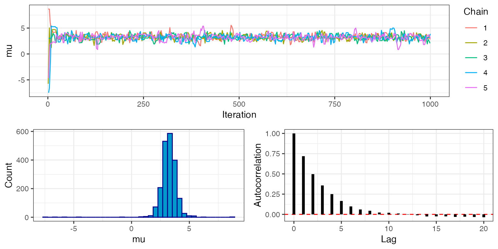

Basic MCMC
Bob Verity and Pete Winskill
2019-05-20
example.RmdThe drjacoby package runs flexible Markov chain Monte Carlo (MCMC) using likelihoods and priors specified by the user. These likelihood and prior functions can be specified either as R functions, or as C++ functions using the fantastic Rcpp package. This vignette demonstrates a basic MCMC implementation in drjacoby using both the R and C++ methods, and compares the two methods in terms of speed.
Setup
We need the following elements to run drjacoby:
- some data
- some parameters
- a likelihood function
- a prior function
Starting with the data, let’s assume that our data consists of a series of draws from a normal distribution with a given mean (mu_true) and standard deviation (sigma_true). We can generate some random data to play with:
# set random seed
set.seed(1)
# define true parameter values
mu_true <- 3
sigma_true <- 2
# draw example data
x <- rnorm(10, mean = mu_true, sd = sigma_true)For our example MCMC we will assume that we know the correct distribution of the data (i.e. the normal distribution), and we know that the mean is no smaller than -10 and no larger than 10, but otherwise the mean and standard deviation of the distribution are unknown. Parameters within drjacoby must be defined in dataframe, where we specify minimum, maximum, and initial values:
# define parameters dataframe
df_params <- data.frame(name = c("mu", "sigma"),
min = c(-10, 0),
max = c(10, Inf),
init = c(5, 1))
print(df_params)
#> name min max init
#> 1 mu -10 10 5
#> 2 sigma 0 Inf 1Note that in this example we have one parameter (mu) that occupies a finite range [-10, 10], and one parameter (sigma) that can take any positive value. drjacoby deals with different parameter ranges using reparameterisation, which all occurs internally meaning we don’t need to worry these constraints affecting our MCMC.
Next we need a likelihood function. This must have two input arguments: 1) a vector of parameters, 2) a vector of data, and these must be input in that order. It also must return a single value for the likelihood in log space. These constraints on the format of the likelihood function might seem a bit restrictive, but they are needed in order for drjacoby to know how to use the function internally.
Typically our likelihood function will involve splitting the input vector of parameters into individual elements before calculating the probability of the data. In our example, the likelihood function is quite simple thanks to the dnorm() function which can return values already in log space:
# define log-likelihood function
r_loglike <- function(params, x) {
# extract parameter values
mu <- params[1]
sigma <- params[2]
# calculate log-probability of data
ret <- sum(dnorm(x, mean = mu, sd = sigma, log = TRUE))
# return
return(ret)
}Finally, we need a prior function. This must take a single vector of parameters as input, and it must return a single value for the prior probability of those parameters in log space. Again, this strict format is required for drjacoby to know how to use the prior internally. In our case we will assume a uniform prior on mu over the range [-10, 10], and a log-normal prior on sigma, which is defined from 0 to infinity:
Running the MCMC
Once we have all the elements above it is straightforward to run a basic MCMC. As with any MCMC, we must define the number of burn-in and sampling iterations that we want to draw. Unlike most MCMC’s, the burn-in is repeated over multiple phases - three by default. These multiple burn-in phases give greater control in terms of tuning parameters (see this vignette on tuning parameters). Finally, by default drjacoby prints progress bars to the console to report on the progress of the MCMC. When running in R markdown we can use the option pb_markdown = TRUE to print progress bars in a markdown-friendly way, and if you want to get rid of these completely you can use the option silent = TRUE.
# run MCMC
r_mcmc_out <- run_mcmc(data = x,
df_params = df_params,
loglike = r_loglike,
logprior = r_logprior,
burnin = 1e3,
samples = 1e3,
pb_markdown = TRUE)
#> MCMC chain 1
#> burn-in phase 1
#>
|
|=================================================================| 100%
#> bandwidth: 0.327318, acceptance rate: 22.5%
#> burn-in phase 2
#>
|
|=================================================================| 100%
#> bandwidth: 0.341449, acceptance rate: 23.1%
#> burn-in phase 3
#>
|
|=================================================================| 100%
#> bandwidth: 0.385723, acceptance rate: 23%
#> sampling phase
#>
|
|=================================================================| 100%
#> acceptance rate: 20.9%
#>
#> completed in 0.157665 secondsThe raw output produced by this function is essentially a large nested list, containing all log-likelihoods and parameter values. We can dig down to individual elements of this list using the $ symbol, which can be combined with auto-complete on most platforms to make life easier. For example, the following line prints the first mu values from from first rung of the first burn-in phase of the first chain!
# get first few mu values
head(r_mcmc_out$chain1$theta_burnin$phase1$rung1$mu)
#> [1] 5.000000 5.000000 4.025150 3.773924 3.773924 3.773924Note that the first value is 5.0, which is the initial value for mu that we specified in the df_params dataframe.
Exploring outputs and checking MCMC performance
We can produce simple trace plots of output, e.g. the log-likelihood:
# extract and plot log-likelihood in first burn-in phase, and in the sampling phase
loglike_burnin <- r_mcmc_out$chain1$loglike_burnin$phase1$rung1
loglike_sampling <- r_mcmc_out$chain1$loglike_sampling$rung1
plot(loglike_burnin, type = 'l')
plot(loglike_sampling, type = 'l')
and paramters:
# extract and plot posterior parameter draws
theta <- r_mcmc_out$chain1$theta_sampling$rung1
mu <- theta$mu
sigma <- theta$sigma
plot(mu, type = 'l', ylim = c(0,10))
abline(h = mu_true, col = 2)

Using C++ functions
Although drjacoby is an R package, under the hood it is running C++ through the fantastic Rcpp package. When we pass in an R likelihood function, as in the example above, the code is forced to jump out of C++ into R to evaluate the likelihood before jumping back into C++. This comes with an obvious computational overhead, which can be avoided by specifying functions directly within C++.
To use C++ functions within drjacoby we need the Rcpp and RcppXPtrUtils packages installed and attached. These packages allow us to write a C++ function directly within R as simple character string, and then to use the cppXPtr() function to convert this string to a function pointer that will be recognised by drjacoby. As before, there are some constraints on what this function must look like. First, it must take as input a std::vector<double> of parameters followed by a std::vector<double> of data. Note that data must be input as doubles, and so data consisting of integer or boolean values should be dealt with as though they are continuous values (for example TRUE = 1.0, FALSE = 0.0). Second, the function must return an object of class SEXP. The easiest way to achieve this is to calculate the raw return value as a double, and to use the Rcpp::wrap() function when returning to transform to SEXP. As before, the value returned should be the likelihood evaluated in log space.
One disadvantage of using C++ functions over R functions is that we do not have access to all R’s nice distributions, for example dnorm(), and so functions will tend to be mathematically more involved. For example, the r_loglike() function defined above can be re-written in C++ as follows:
# define cpp log-likelihood function as character string
cpp_loglike_string <- "SEXP loglike(std::vector<double> theta, std::vector<double> x) {
// extract parameters from theta
double mu = theta[0];
double sigma = theta[1];
// sum log-likelihood over all data
double ret = 0.0;
for (size_t i = 0; i < sizeof(x); ++i) {
ret += -0.5*log(2*M_PI*sigma*sigma) - (x[i] - mu)*(x[i] - mu)/(2*sigma*sigma);
}
return Rcpp::wrap(ret);
}"
# convert to a function pointer
cpp_loglike <- RcppXPtrUtils::cppXPtr(cpp_loglike_string)Similarly, we can define the prior as a C++ function. This function must take as input a std::vector<double> of parameters, and must output a single SEXP value representing the prior probability of the parameters in log space. The r_logprior() function defined above can be re-written in C++ as follows:
# define cpp logprior function
cpp_logprior_string <- "SEXP logprior(std::vector<double> params){
// extract parameters from theta
double sigma = params[1];
// calculate logprior
double ret = -log(20.0) - log(sigma) - 0.5*log(2*M_PI*1.0*1.0) - (log(sigma) - 0)*(log(sigma) - 0)/(2*1.0*1.0);
return Rcpp::wrap(ret);
}"
cpp_logprior <- RcppXPtrUtils::cppXPtr(cpp_logprior_string)With these two functions defined we can run the MCMC exactly the same as before, passing in the new functions:
# run MCMC
r_mcmc_out <- run_mcmc(data = x,
df_params = df_params,
loglike = cpp_loglike,
logprior = cpp_logprior,
burnin = 1e3,
samples = 1e3,
pb_markdown = TRUE)
#> MCMC chain 1
#> burn-in phase 1
#>
|
|=================================================================| 100%
#> bandwidth: 6.62374e-07, acceptance rate: 0%
#> burn-in phase 2
#>
|
|=================================================================| 100%
#> bandwidth: 5.24177e-07, acceptance rate: 0%
#> burn-in phase 3
#>
|
|=================================================================| 100%
#> bandwidth: 5.24177e-07, acceptance rate: 0%
#> sampling phase
#>
|
|=================================================================| 100%
#> acceptance rate: 0%
#>
#> completed in 0.00351852 secondsYou should see that this MCMC runs considerably faster than the previous version that used R functions. We can quantify how much faster using the microbenchmark package. In the following we compare the MCMC evaluated using 1) the R likelihood and prior, 2) the C++ likelihood and prior, 3) a mixed method using the C++ likelihood but the R prior.
# run both R and C++ versions multiple times to compare speed
bm <- microbenchmark::microbenchmark(r_version = run_mcmc(data = x,
df_params = df_params,
loglike = r_loglike,
logprior = r_logprior,
burnin = 1e3,
samples = 1e3,
silent = TRUE),
cpp_version = run_mcmc(data = x,
df_params = df_params,
loglike = cpp_loglike,
logprior = cpp_logprior,
burnin = 1e3,
samples = 1e3,
silent = TRUE),
mixed_version = run_mcmc(data = x,
df_params = df_params,
loglike = cpp_loglike,
logprior = r_logprior,
burnin = 1e3,
samples = 1e3,
silent = TRUE),
times = 10)
summary(bm)
#> expr min lq mean median uq
#> 1 r_version 120.314394 122.060632 124.225239 123.593674 125.01231
#> 2 cpp_version 4.514447 4.625224 5.712066 4.746994 5.71814
#> 3 mixed_version 60.437277 63.441485 66.738545 68.310206 68.54274
#> max neval
#> 1 131.05872 10
#> 2 11.75316 10
#> 3 72.75746 10The pure C++ version was on average around 26 times faster than the pure R version in this example. It is interesting to note that the mixed C++ and R version lies almost exactly between the two pure methods, suggesting that the computational cost of the pure R version is dominated in almost equal measure by calculating the likelihood and the prior. In conclusion, if efficiency is a goal then C++ versions of both the likelihood and prior should be used. If ease of programming is more important then R versions of these functions should suffice.